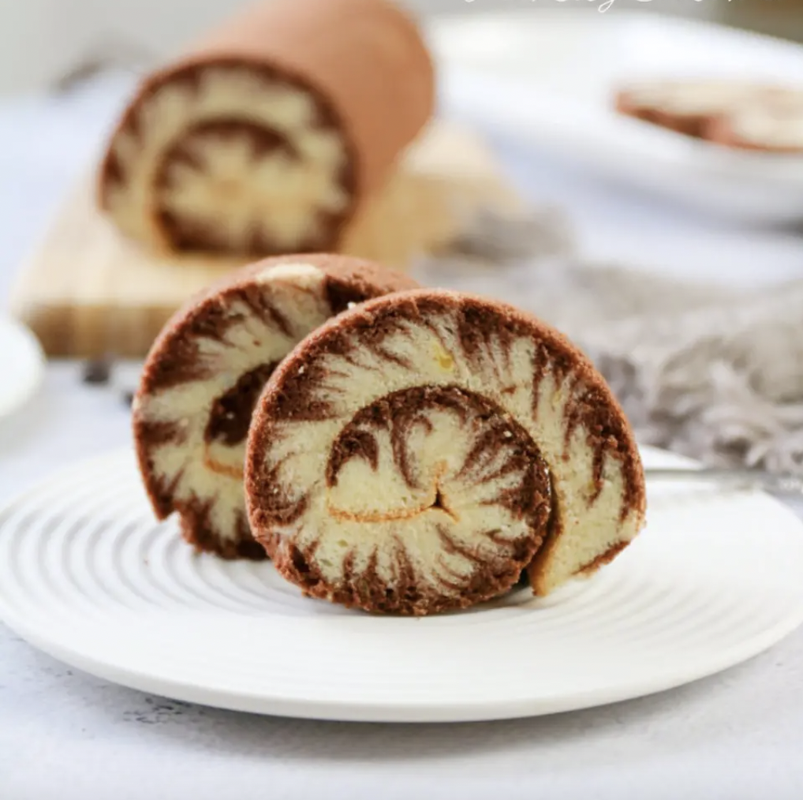

Cocoa Whirlwind Cake Roll Recipe

Cocoa Cake Roll
Fluffy cake with a marble design elegantly rolled into a delicious
treat to enjoy with friends or family.
- 10g cocoa powder
- 20g hot water
- 65g ghee
- 65g milk
- 75g flour
- 65g fine sugar
- 5 eggs
- Line a baking tray with oilcloth or parchment paper. Separate the eggs, put the egg yolks into a small bowl, beat the egg whites into a mixing bowl and put them in the refrigerator to refrigerate
- Pour hot water into the cocoa powder, stir evenly and let cool for later use
- Sieve and add the low flour, and use the egg to draw Z-shape to mix until there is no dry powder
- Pour the egg yolk into the batter, and mix well again in the same way
- Then prehead the oven to 310 degrees
- Take out the egg whites from the refrigerator, add fine sugar in 3 times, beat until medium-dry foaming, lift the egg head with a big hook
- Then mix the batter, first scoop 1/3 of the meringue and egg yolk paste and mix it roughly, then pour it into the remaining protein, mix well
- Divide 170 grams of cake batter into another pot, pour the remaining cake batter into the baking pan and spread it out
- Add the cocoa batter that was mixed at the beginning to 170 grams of cake batter, mix well and put it into a piping bag, then squeeze the cocoa batter on top of the original cake batter, and spread it out again
- Insert a stick into the cake batter at 45 degrees, and draw 6-7 back and forth horizontally and vertically in the baking pan, making sure that your fingers can touch the bottom of the baking pan every time you draw
- Then gently shake it flat and put it in the oven to bake for about 30-35 minutes.
- After the cake is out of the oven, immediately take it out and put it on a cooling rack to cool
- After about 10 minutes, spread a longer piece of baking paper on the cake, turn it upside down and tear off the bottom paper
- After the cake is cooled to warm, roll it up and set it for half an hour before slicing and enjoying